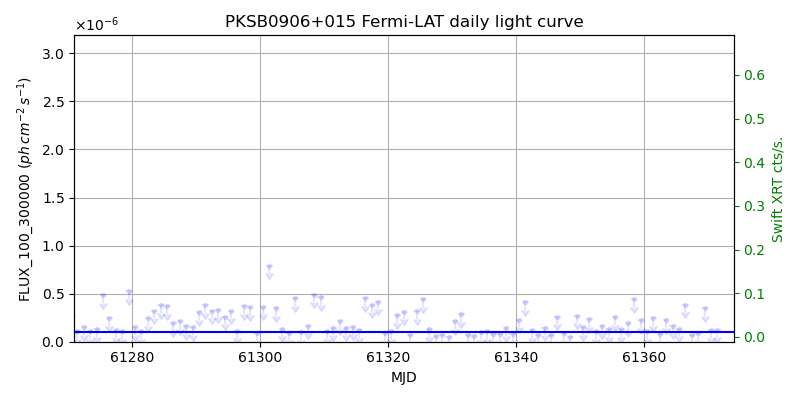
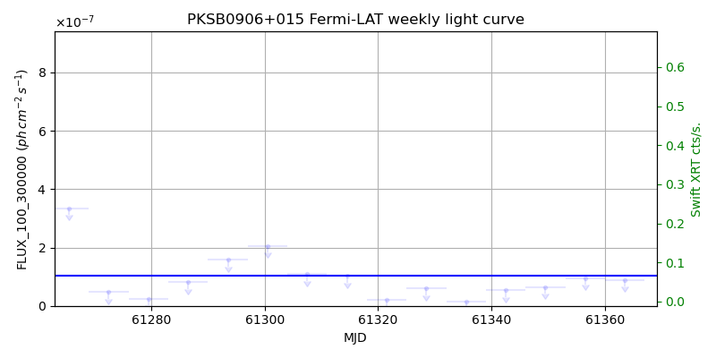
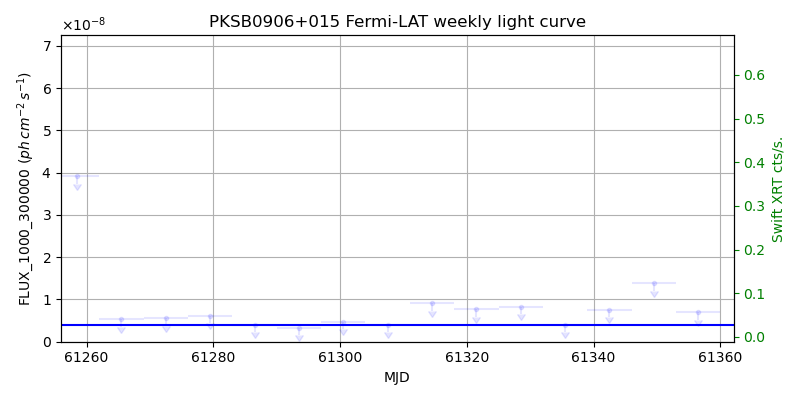

LAT Lightcurve site: https://fermi.gsfc.nasa.gov/ssc/data/access/lat/msl_lc/source/PKS_B0906p015
Swift site: https://www.swift.psu.edu/monitoring/source.php?source=PKSB0906+015
NED: Query
Time of last update of this page: UT: 2026-11-20 16:20 (MJD: 61364.681)
| Property | Value |
|---|---|
| R.A. | 9:09:10.08 |
| Dec. | 1:21:36.0 |
| z | 1.023 |
| 3FGL SpectrumType | LogParabola |
| 3FGL PL Index | |
| 3FGL Flux_100_300000 | 1.03e-07 1 / (s cm2) |
| 3FGL Flux_1000_300000 | 4.01e-09 1 / (s cm2) |
| 3FGL Flux >200 GeV | 2.34e-13 1 / (s cm2) |
| 3FGL Extrap. Crab >200 GeV | 0.00 |
| 3FGL Flux After EBL Absorption >200GeV | 4.49e-15 1 / (s cm2) |
| 3FGL EBL Crab Fraction >200GeV | 0.00 |

| MJD | dMJD | Flux | dFlux | Frac3FGL | FracCrab>200GeV | EBLFracCrab>200GeV |
|---|---|---|---|---|---|---|
| 61359.50 | 0.50 | 2.25e-07 | 0.00e+00 | 0.00 | 0.00 | 0.00 |
| 61360.50 | 0.50 | 1.07e-07 | 0.00e+00 | 0.00 | 0.00 | 0.00 |
| 61361.50 | 0.50 | 2.48e-07 | 0.00e+00 | 0.00 | 0.00 | 0.00 |
| 61362.50 | 0.50 | 7.77e-08 | 0.00e+00 | 0.00 | 0.00 | 0.00 |
| 61363.50 | 0.50 | 2.27e-07 | 0.00e+00 | 0.00 | 0.00 | 0.00 |

| MJD | dMJD | Flux | dFlux | Frac3FGL | FracCrab>200GeV | EBLFracCrab>200GeV |
|---|---|---|---|---|---|---|
| 61328.50 | 3.50 | 6.03e-08 | 0.00e+00 | 0.00 | 0.00 | 0.00 |
| 61335.50 | 3.50 | 1.51e-08 | 0.00e+00 | 0.00 | 0.00 | 0.00 |
| 61342.50 | 3.50 | 5.47e-08 | 0.00e+00 | 0.00 | 0.00 | 0.00 |
| 61349.50 | 3.50 | 6.44e-08 | 0.00e+00 | 0.00 | 0.00 | 0.00 |
| 61356.50 | 3.50 | 9.53e-08 | 0.00e+00 | 0.00 | 0.00 | 0.00 |
| MJD | dMJD | Flux | dFlux | Frac3FGL | FracCrab>200GeV | EBLFracCrab>200GeV |
|---|---|---|---|---|---|---|
| 61359.50 | 0.50 | 2.13e-08 | 0.00e+00 | 0.00 | 0.00 | 0.00 |
| 61360.50 | 0.50 | 5.50e-08 | 0.00e+00 | 0.00 | 0.00 | 0.00 |
| 61361.50 | 0.50 | 1.94e-08 | 0.00e+00 | 0.00 | 0.00 | 0.00 |
| 61362.50 | 0.50 | 5.47e-08 | 0.00e+00 | 0.00 | 0.00 | 0.00 |
| 61363.50 | 0.50 | 1.95e-08 | 0.00e+00 | 0.00 | 0.00 | 0.00 |

| MJD | dMJD | Flux | dFlux | Frac3FGL | FracCrab>200GeV | EBLFracCrab>200GeV |
|---|---|---|---|---|---|---|
| 61328.50 | 3.50 | 8.27e-09 | 0.00e+00 | 0.00 | 0.00 | 0.00 |
| 61335.50 | 3.50 | 4.04e-09 | 0.00e+00 | 0.00 | 0.00 | 0.00 |
| 61342.50 | 3.50 | 7.56e-09 | 0.00e+00 | 0.00 | 0.00 | 0.00 |
| 61349.50 | 3.50 | 1.39e-08 | 0.00e+00 | 0.00 | 0.00 | 0.00 |
| 61356.50 | 3.50 | 6.92e-09 | 0.00e+00 | 0.00 | 0.00 | 0.00 |
--------------------------------------------------------- Using user-supplied coords: 9:09:10.08 1:21:36.0 2000 --------------------------------------------------------- FLWO UT night of: 2026-11-21 Local Sid. @ Midnight: 03:37 Sunset (-15.0) (local, UT): 18:33 01:33 Sunrise (-15.0) (local, UT): 05:47 12:47 Moonrise (local, UT): Moonset (local, UT): 03:40 10:40 Moon phase: 0.85 --------------------------------------------------------- AzTime LSID UT Obj_el Obj_az Mn_el Mn_az Sep. --------------------------------------------------------- 18:33 22:09 01:33 -54.3 25.6 47.9 117.4 127.9 19:03 22:39 02:03 -51.0 36.7 53.3 125.0 127.7 19:33 23:09 02:33 -46.7 46.2 58.2 134.7 127.5 20:03 23:39 03:03 -41.8 54.1 62.3 146.9 127.3 20:33 00:09 03:33 -36.4 60.9 65.1 162.1 127.2 21:03 00:39 04:03 -30.6 66.7 66.3 179.7 127.0 21:33 01:09 04:33 -24.7 71.9 65.4 197.5 126.8 22:03 01:39 05:03 -18.5 76.5 62.9 213.2 126.7 22:33 02:09 05:33 -12.2 80.8 59.0 225.9 126.5 23:03 02:39 06:03 -5.7 84.9 54.2 235.9 126.3 23:33 03:09 06:33 0.9 88.8 48.9 243.9 126.2 00:03 03:39 07:03 7.0 92.8 43.2 250.4 126.0 00:33 04:10 07:33 13.4 96.9 37.3 255.9 125.8 01:03 04:40 08:03 19.7 101.1 31.2 260.7 125.6 01:33 05:10 08:33 25.9 105.7 25.1 265.1 125.3 02:03 05:40 09:03 31.9 110.7 19.0 269.2 125.1 02:33 06:10 09:33 37.8 116.5 12.9 273.0 124.8 03:03 06:40 10:03 43.4 123.2 6.8 276.9 124.6 03:33 07:10 10:33 48.5 131.1 1.0 280.7 124.3 04:03 07:40 11:03 52.9 140.7 -4.9 284.7 124.0 04:33 08:10 11:33 56.5 152.2 -11.1 288.8 123.7 05:03 08:40 12:03 58.8 165.5 -16.8 293.2 123.4 05:33 09:10 12:33 59.6 180.2 -22.3 298.1 123.1 05:47 09:25 12:47 59.4 187.2 -24.8 300.5 122.9 --------------------------------------------------------- Dark hours >55 deg.: 1.46 srcstart (UT): 2026-11-21 11:19 srcend (UT): 2026-11-21 12:46